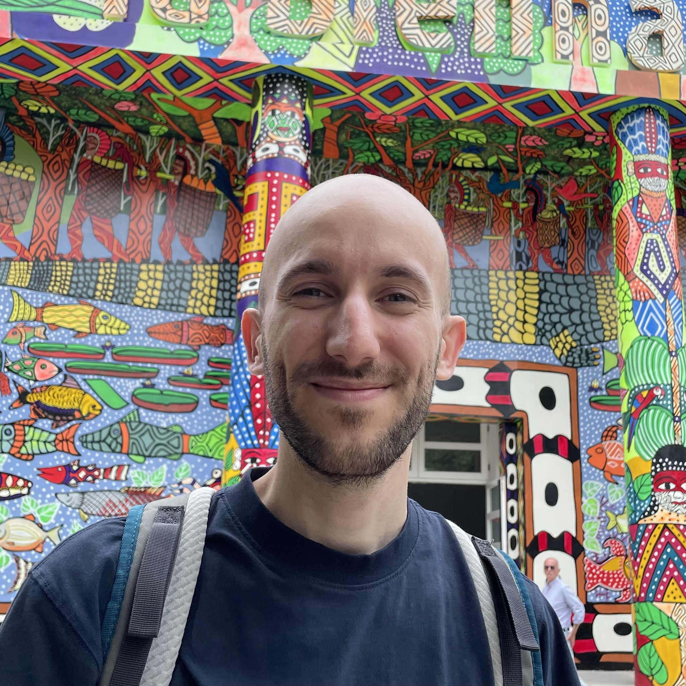

I am a Postdoctoral Researcher at the Institute of Philosophy at USI (Università della Svizzera italiana) in Lugano, Switzerland.
I work in philosophy of physics, philosophy of science, and metaphysics of science.
From September 2027, I will lead the SNSF Ambizione project Effective Realism: A New Framework for the Ontology of the Sciences, based at USI.
I did my PhD at the University of Bristol. I have been a visiting researcher at NTU Singapore, the University of Pittsburgh, and King’s College London. I'm an affiliate member of the Geneva Symmetry Group.
Here is my CV (updated 09/26, PDF)